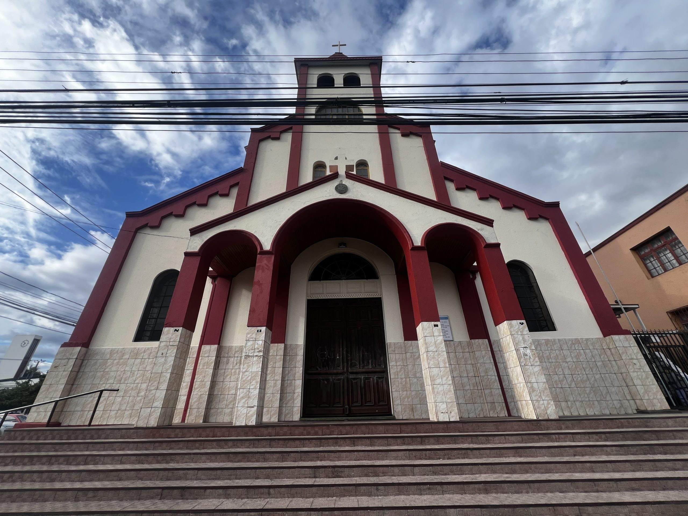

Álbum de Oro del Centenario
SF100: Recuerdos
Comparte tus fotografías históricas y recuerdos entrañables vividos en nuestra Parroquia San Francisco de Asís.
Subir Foto de Recuerdo
Tu fotografía ingresará al registro del Centenario y recibirá un Código Único de Identificación. Al ser confirmada por el administrador, se publicará en la galería comunitaria.
Galería de Recuerdos
Fotografías históricas
FOTO-000
Templo Parroquial Histórico
Vista frontal de nuestro icónico templo franciscano en calle Manuel Montt durante las primeras décadas de vida parroquial.